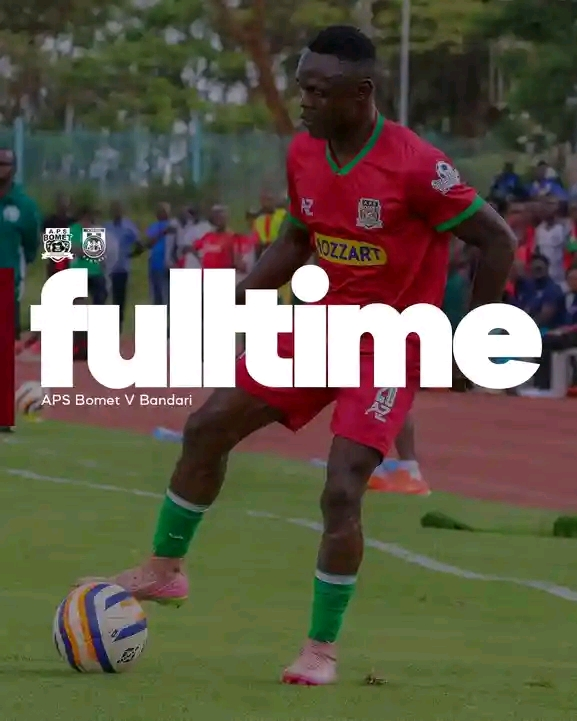

Home
Fixtures
Results
News
Stats
Top Scorers
LATEST NEWS & RESULTS
Sort by: Date
Sort by: Time

APS BOMET FC 1 – O BANDARI FC
December 7 2025
APS BOMET FC secured a hard-fought 1 - 0 victory against Bandari FC in an intense Kenyan Premier League clash.
See more